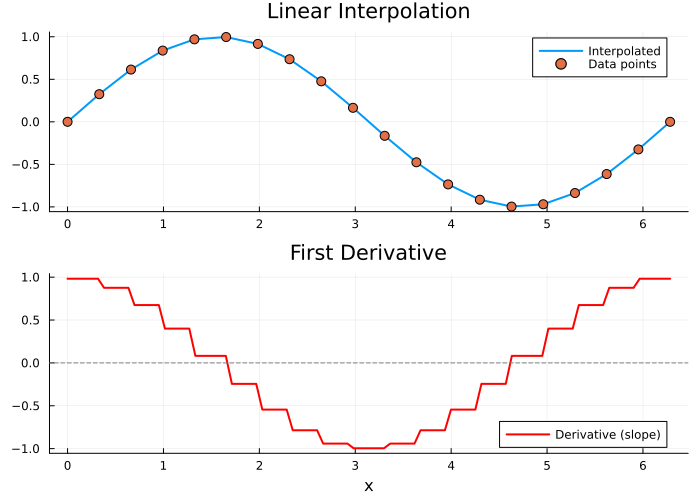
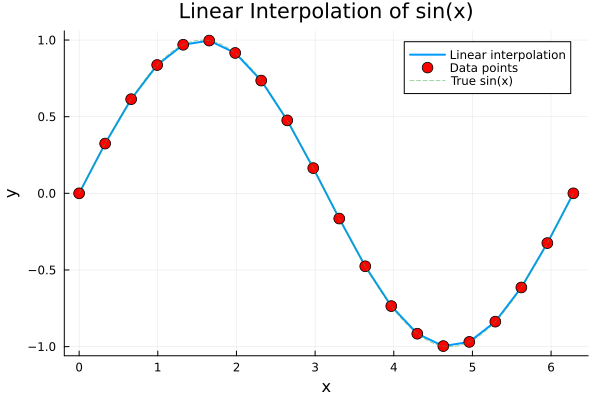

Linear Interpolation
Linear interpolation connects data points with straight line segments. FastInterpolations.jl provides high-performance linear interpolation with zero-allocation on hot paths.
Basic Usage
using FastInterpolations
using Plots
# Sample data
x = range(0.0, 2π, 20)
y = sin.(x)
# Interpolate at a single point
result = linear_interp(x, y, 1.5)
println("linear_interp(x, y, 1.5) = ", round(result, digits=4))linear_interp(x, y, 1.5) = 0.984# Interpolate at multiple points
xq = [0.5, 1.0, 1.5, 2.0]
results = linear_interp(x, y, xq)
println("Results: ", round.(results, digits=4))Results: [0.4729, 0.8403, 0.984, 0.9072]In-Place Interpolation
For maximum performance in loops, use the in-place version:
out = zeros(4)
linear_interp!(out, x, y, xq)
println("In-place results: ", round.(out, digits=4))In-place results: [0.4729, 0.8403, 0.984, 0.9072]Grid Types and Performance
FastInterpolations.jl automatically selects the optimal algorithm based on your grid type:
| Grid Type | Lookup Complexity | Recommended For |
|---|---|---|
AbstractRange | O(1) direct indexing | Uniform grids (best performance) |
AbstractVector | O(log n) binary search | Non-uniform grids |
# Range grid (O(1) - fastest)
x_range = range(0.0, 10.0, 100)
y_range = sin.(x_range)
# Vector grid (O(log n))
x_vector = collect(x_range)
y_vector = sin.(x_vector)
# Both work seamlessly - Range is faster
result_range = linear_interp(x_range, y_range, 5.5)
result_vector = linear_interp(x_vector, y_vector, 5.5)
println("Range result: ", round(result_range, digits=6))
println("Vector result: ", round(result_vector, digits=6))Range result: -0.704653
Vector result: -0.704653Use Range grids whenever possible. They provide O(1) index lookup compared to O(log n) for vectors.
Reusable Interpolant
When both x and y are fixed and you need repeated evaluation, create a reusable interpolant:
# Create interpolant once
itp = linear_interp(x, y)
# Evaluate multiple times (zero-allocation)
result1 = itp(1.0)
result2 = itp(2.0)
result3 = itp(3.0)
println("itp(1.0) = ", round(result1, digits=4))
println("itp(2.0) = ", round(result2, digits=4))
println("itp(3.0) = ", round(result3, digits=4))itp(1.0) = 0.8403
itp(2.0) = 0.9072
itp(3.0) = 0.1409In-Place Evaluation with Interpolant
out = zeros(3)
itp(out, [1.0, 2.0, 3.0])
println("In-place: ", round.(out, digits=4))In-place: [0.8403, 0.9072, 0.1409]Derivative Evaluation
Compute the first derivative (slope) at query points using deriv=1:
# Derivative at a point
slope = linear_interp(x, y, 1.5; deriv=1)
println("Slope at x=1.5: ", round(slope, digits=4))Slope at x=1.5: 0.0822# Derivative at multiple points (Range works directly - no collect needed)
xq_dense = range(0.0, 2π, 100)
y_interp = linear_interp(x, y, xq_dense)
y_deriv = linear_interp(x, y, xq_dense; deriv=1)
p = plot(layout=(2,1), size=(700, 500))
plot!(p[1], xq_dense, y_interp, label="Interpolated", linewidth=2)
scatter!(p[1], x, y, label="Data points", markersize=5)
title!(p[1], "Linear Interpolation")
plot!(p[2], xq_dense, y_deriv, label="Derivative (slope)", linewidth=2, color=:red)
hline!(p[2], [0], linestyle=:dash, color=:gray, label=nothing)
title!(p[2], "First Derivative")
xlabel!(p[2], "x")
p
Visual Example
# Create a smooth query grid (Range accepted directly)
xq = range(0.0, 2π, 200)
yq = linear_interp(x, y, xq)
plot(xq, yq, label="Linear interpolation", linewidth=2)
scatter!(x, y, label="Data points", markersize=6, color=:red)
plot!(xq, sin.(xq), label="True sin(x)", linestyle=:dash, alpha=0.5)
xlabel!("x")
ylabel!("y")
title!("Linear Interpolation of sin(x)")
When to Use Linear Interpolation
Choose linear interpolation when:
- Speed is critical and smoothness is not required
- Data is already nearly linear between points
- You need guaranteed monotonicity preservation
- Memory is constrained (no cache overhead)
Consider cubic interpolation when:
- Smooth curves (C² continuity) are required
- Derivative continuity matters
- Data represents smooth physical quantities
See Also
- Derivatives: Analytical derivatives for interpolants
- Cubic Overview: For smooth C² continuous interpolation
API Reference
See the Linear API Reference for complete function signatures and options.